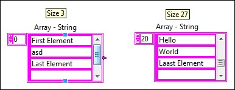
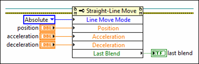
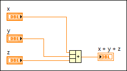
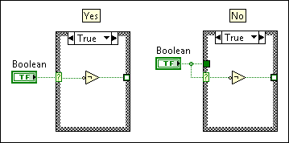
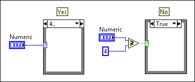
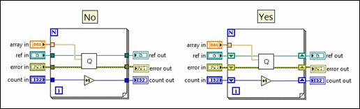
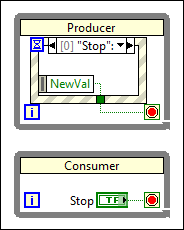
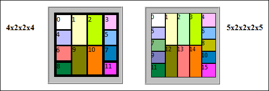

Use the following checklists to help you maintain consistent style and quality. You can customize these checklists to fit the specifications of your application.
|
Note��The LabVIEW VI Analyzer Toolkit provides tests that check VIs interactively or programmatically for style, efficiency, and other aspects of LabVIEW programming. Refer to the National Instruments website to learn more about this LabVIEW toolkit. |
Show/Hide Checklist
|
Set default values for controls and indicators. Default values enable a VI to execute as expected without requiring additional interaction.
Details Run the VI to verify that controls and indicators with default values do not cause the VI to fail.
If you set default values, you enable a function or VI to handle more options internally without requiring as much user interaction. For example, if you set a default value of 0 for the Write Delimited Spreadsheet VI, LabVIEW uses that default value to automatically present an empty file dialog and prompt for an input. |
|||
|
Use Size to Text for labels so the text rectangle automatically resizes to accommodate the text you enter. By default, Size to Text is enabled for one line of text.
Details The three standard fonts, application, system, and dialog, vary depending on the platform you use. For example, preferences and video driver settings in Windows affect the size of the fonts. Text may appear larger or smaller on different systems. To compensate for font variations, allow extra space for larger fonts and enable the Size to Text option on the shortcut menu. |
|||
| (VI Analyzer) Avoid overlapping the labels, digital displays, or other parts of controls and indicators. Allow for extra space between controls and indicators to account for font changes on different platforms. Overlapped controls and indicators slow down screen updates and can make the control or indicator flicker. |
Show/Hide Checklist
| Design user interface front panels so that operations and results are clear and enhance the usability of the VI or application. | |||||||||||
| Avoid excessive use of color. Use color logically, sparingly, and consistently, if at all. | |||||||||||
|
Disable the Abort button. Use the system X button or File�Exit option to safely shutdown resources instead of adding an additional exit button.
Details The Abort Execution button stops the VI immediately and prevents the VI from finishing the current iteration. If you abort a VI that uses external resources, such as external hardware, resources may remain in an unknown state because they were not reset or released properly. |
|||||||||||
| Hide the toolbar. | |||||||||||
| Use one consistent style for all controls. Use system or silver style controls when possible. | |||||||||||
| Use custom controls or strict type definition controls to customize the appearance of a control. Use strict type definition controls only to preserve the exact appearance of a control in each location of use. | |||||||||||
|
(VI Analyzer) Use the standard application, system, and dialog fonts for all user interfaces in the application.
Details Use the standard font unless you have a specific reason to use a different font. For example, you can use monospace fonts because they are proportionally spaced for string controls and indicators that constrict character use. |
|||||||||||
| Configure numeric inputs to have data ranges that account for potential invalid values that a user may enter. | |||||||||||
|
Arrange controls from top left to bottom right.
Details Place controls in the order of typical use. For top-level VIs visible to users, place the most important controls in the most prominent positions. For subVI front panels, place the controls and indicators of the subVI so that they correspond to the connector pane pattern. |
|||||||||||
| Organize UI elements by proximity, alignment, decorations, and UI features such as tab controls and subpanels. | |||||||||||
|
Use an array style consistent with similar data structures.
Details For example, remove the index control and add a scrollbar to make an array style consistent with listbox style. |
|||||||||||
| Configure the front panel to fit the monitor resolution used in the application. | |||||||||||
|
Use labels to describe the function of controls and indicators. Limit caption use to controls and indicators that require more information than the label conveys or when you want the ability to change the display text of a control programmatically.
Details The following table lists the situations to use captions and labels and the corresponding examples.
|
Show/Hide Checklist
| (VI Analyzer) Use the system control style when possible. Using the system control style ensures that the dialogs you create look similar to the dialogs provided by the operating system you use. | |
| Avoid using scroll bars on front panels that look like dialog windows. Design the dialog box to display all information. Use scroll bars on individual controls and indicators as appropriate. | |
| If you use the title bar, provide a meaningful window title that explains the purpose of a dialog. Avoid using the default VI name as the window title because the VI does not effectively explain the purpose of the dialog. | |
| If you use menus, only use menus that are specific to the dialog window. Avoid using default menus. Details Default menus provide more options than are necessary and make sense for the particular application. Customize the menu options for an application to enhance its professional appearance. |
|
| Limit dialog box use to critical user interactions. Details Use the system controls in dialog boxes to prompt and gather settings and configuration information from the user. You also can use tab controls to group front panel controls and indicators in a smaller area and reduce clutter in a dialog box. Many programs also use dialog boxes to announce messages to the user. However, avoid overusing this type of dialog box. Use a status text window to display less serious warnings. Make sure that all dialogs are either modal to the main application or floating. You can prevent a dialog from staying hidden behind other windows if the dialog is modal or floating. |
|
| Use the system panel background color for dialog user interfaces to maintain consistency. |
Show/Hide Checklist
| Write descriptions and create tip strips for UI front panels and controls to describe the purpose of an object and give users instructions for using the object. Details When you copy an object to another VI, you also copy the description. You may need to change the description for the new object. |
|
| Set up intuitive keyboard shortcuts and tabbing order for controls. Details Some users prefer to use the keyboard instead of a mouse. In some environments, such as a manufacturing plant, only a keyboard is available. Consider including keyboard shortcuts for VIs even if the use of a mouse is available because keyboard shortcuts add convenience to a VI. Pay attention to the key navigation options for objects on the front panel and set the tabbing order for the objects to read left to right and top to bottom. Set the <Enter> key as the keyboard shortcut for the front panel default control, which is usually the OK button. However, if you have a multiline string control on the front panel, you might not want to use the <Enter> key as a shortcut. If the front panel has a Cancel button, set the <Esc> key to be the keyboard shortcut. You also can use function keys as navigation buttons to move from screen to screen. If you do this, be sure to use the shortcuts consistently. Select Edit�Set Tabbing Order to arrange controls in a logical sequence when the user needs to tab between the controls. For controls that are offscreen, use the Key Navigation tab of the Properties dialog box to skip over the controls when tabbing or to hide the controls. Also consider using the key focus property to set the focus programmatically to a specific control when the front panel opens. |
Show/Hide Checklist
Show/Hide Checklist
|
(VI Analyzer) Verify that data flows from left to right, unless you use feedback nodes, and that wires enter from the left and exit to the right.
Details If you have a reason not to follow this guideline, provide a wire label or a floating comment to explain any exceptions. Use owned labels to label long wires. Labeling wires is useful for wires coming from shift registers and for long wires that span the entire block diagram. Organize the block diagram and draw wires according to suggested design guidelines. You also can automatically clean up the wires on the block diagram. |
|
| (VI Analyzer) Arrange objects symmetrically on the block diagram by aligning and distributing functions, terminals, and constants evenly. Details Use the Align Objects and Distribute Objects pull-down menus on the toolbar to arrange objects the block diagram. When objects are aligned and distributed evenly, you can use straight wires to connect objects together. Using straight wires makes the block diagram easier to read. |
|
| (VI Analyzer) When possible, avoid leaving front panel terminals unwired on the block diagram | |
| Avoid coloring diagrams. Color can distract users. | |
| Use default colors for structures, such as Case or Event structures. | |
| Avoid using Flat Sequence structures unless you must use them to define execution order. | |
| If possible, arrange parallel loops from top to bottom to represent logical data flow. | |
| Place control and indicator terminals outside of any loops or structures unless values need to be read or updated continuously. Align control terminals to the far left and indicator terminals to the far right of the block diagram. | |
|
Make sure the subVI icon, rather than the connector pane, is visible on the block diagram.
Details The subVI icon is more helpful than the connector pane on the block diagram. The VI icon reveals the purpose of the VI. A connector pane only displays how inputs and outputs are connected. Right-click the subVI and select Visible Items. Verify that the Terminals option does not contain a checkmark. |
|
| (VI Analyzer) Display the terminal for front panel objects on the diagram, not the icon, to conserve space and align with current LabVIEW style. Navigate to Tools�Options to change the default for this option. You can make exceptions for type definitions. Type definition icons are unique and can display useful information about the VI. To make an exception for a type definition icon, right click the icon and select Show as Icon. | |
|
(VI Analyzer) Avoid creating a string constant that contains a single, difficult to read value, such as a space, if the value within that constant is meaningful.
Details Use the built-in LabVIEW string constants. For example, you can use an empty string as a constant to specify the data type of the elements the queue holds. |
|
|
Use the Bundle by Name and Unbundle by Name functions when you access clusters. Avoid using the unnamed Bundle and Unbundle functions.
Details The Bundle by Name and Unbundle by Name functions reference elements of a cluster by name instead of cluster order. You can eliminate the challenge of deciphering the purpose of each data element by referencing elements of a cluster by name. You also can reorder elements or add new elements to a cluster without potentially causing a VI to break. |
|
|
If the value of a large type definition constant is the same as the default values of the elements within the type definition cluster, display the type definition cluster constant as an icon on the block diagram.
Details Otherwise, use the Bundle by Name and Unbundle by Name functions to specify the values of the cluster. If many elements differ from the default value, wrap the Unbundle by Name or Bundle by Name functions and associated values in a subVI and inline the subVI. |
|
|
To save space on the block diagram, avoid displaying more than three or four array elements.
Details For large arrays that contain many elements, show only three or four elements and update the index so that the last element and first empty element are visible. Also, display the scrollbar for large arrays.  |
|
| Set conditional structures such as Case structures and Event structures wide enough to view the full condition text. You can make an exception for multiple conditions in the same frame. If you have multiple conditions in the same frame, you can opt to not increase the display size of the structure to show all conditions. | |
| Right click a Property Node or Invoke Node and select Name Format�Short Names to make the block diagram more readable. Short names use less space. Details The Long Names option may be appropriate in certain instances. For example, use the Long Names option for an element if that element shares the same short name with another element. Avoid using the No Names option. The No Names option does not provide enough information for the user to understand elements or how the code functions. Apply the same reasoning for similar nodes, such as the Invoke Library Node and IP Integration Node. |
|
| Save each VI with the most important frame of multi-frame structures displayed. For example, Case and Event structures contain multiple frames. | |
| (VI Analyzer) Remove unused code. |
Show/Hide Checklist
| Name all classes as nouns. For example, name an example class Waveform Reader.lvclass rather than Reads Waveforms.lvclass. | |
| When designing classes, follow good software engineering practices from other programming languages. Details For example, avoid inheriting one concrete class from an existing concrete class. Instead, create an abstract class as the common parent to both of the concrete classes. |
|
| Name all member VIs of a LabVIEW class as verbs. For example, name an example member VI Read Value VI rather than Value VI. | |
| Avoid including the name of the class in VI names. For example, if you name a class Special Waveform.lvclass and have a VI that adds two such waveforms together, name that VI Add VI rather than Add Special Waveforms VI. | |
| Use the word "Read" to begin the name of any VI that strictly reads data from the private data of a class. Avoid using the word "Get" or any synonym of "Get." | |
| Use the word "Write" to begin the name of any VI that strictly bundles data into the private data of a class. Avoid using the word "Set" or any synonym of "Set." | |
| Consider supporting the syntax of Property Nodes for data accessor VIs. However, accessors that use the syntax of Property Nodes require error terminals and cause significantly more performance burden at run time than data accessor VIs without error terminals. Evaluate and choose appropriately for each class. | |
| Mark all VIs as private unless you have a specific reason to mark them as public, protected, or community. | |
|
Avoid creating excessive wire patterns and colors if you change the wire appearance of a LabVIEW class wire
Details The number of colors and patterns in the block diagram window can affect the readability of LabVIEW code. Change the wire appearance of LabVIEW class wires only if necessary to differentiate between other class wires in the block diagram window. |
|
| Use dark colors on the exterior of class wires to provide contrast against white background. | |
| If the private data of a class contains only refnum types, use the standard refnum color for the class wire. Locate the color named Refnum Wire in the User Colors dialog box for the LabVIEW color picker. Details Best practice requires that any class containing one refnum type should only contain refnum types as elements. Although you can include a mixture of data value reference types and by-value types in a class, the mixture can demonstrate ambiguous behavior when you fork the wire on the diagram. Data value reference types refer to the original element. By-value types create copies of the original element instead of referring directly to the original. Mixing the two types can cause confusing behavior. |
Show/Hide Checklist
| (VI Analyzer) Use visible and meaningful labels for all terminals. | |
| Use a specific and detailed label or attached comment to document constants that contain non-obvious values | |
| (VI Analyzer) Use transparent labels. | |
| Use consistent capitalization for labels. | |
| Use spaces between words in a label. | |
| VI Analyzer) Avoid using duplicate labels. | |
| If an example subVI contains an input and output pair, add a suffix of in to the control and a suffix of out to the indicator. For example, if a VI includes an "input" called object, name the corresponding output "object out." | |
| Always include the word "in" when creating an error in input. | |
| Use parenthesis to document the default value and units of a control or indicator. Details Avoid using parenthesis for any other purposes. In most cases, you can exclude the default value if it is the same as the default value for the given data type. |
|
| Attach free labels on the block diagram to explain code. Use free labels to explain why the code executes the way you configured it to execute, not how the code executes. | |
| Label shift registers and wires when the content is potentially unclear or confusing. | |
| Use one of two styles consistently for the placement of terminal labels. Details For the first style, place terminal labels to the left of the terminal for controls and to the right of the terminal for indicators.  For the second style, left-align terminal labels above the terminal. Use the style you choose consistently within a VI, a library, or a project.  |
|
| (VI Analyzer) Use carriage returns in free labels only to separate paragraphs. | |
| (VI Analyzer) Unless a free label occupies a single line, avoid using the Size to Text method or property for these labels. Instead, size free labels so that all the text is visible. Also, provide extra space at the bottom of a free label to account for font size changes across platforms. | |
| Use the standard application font for free labels on all block diagrams. Details Use the application font on the block diagram unless you have a specific reason to use a different font. |
|
| Use the default free label color for all comments. You can make exceptions under special circumstances, such as sample projects in LabVIEW 2012 and later. LabVIEW 2012 and later use a new style precedent for comments that display different types of information. | |
| For subdiagram labels, use the default appearance for all structures, such as Case and Event structures. | |
| For each VI, such as API VIs and examples, designed for third-party use, describe what the VI does in the VI Description text box. Consider describing all VIs in the VI Description text box. Details To test VI the documentation you create for a VI, write and revise a VI description and confirm that the description displays correctly in the Context Help window. Describe how to use the VI and any required parameter settings in the VI Description text box on the Documentation page of the VI Properties dialog box. Check the spelling of all words in the VI Properties dialog box and on the front panel and block diagram. |
Show/Hide Checklist
Show/Hide Checklist
|
Use type definitions, not strict type definitions, to preserve the data type of controls used in more than one place, especially for enumerated type controls and data structures.
Details Use a type definition when you use the same unique control in more than one location or when you have a very large data structure passing between several subVIs. By using a type definition control, LabVIEW automatically propagates changes to the control or the data structure throughout all the VIs and subVIs. |
|
| Use enumerated type controls if possible. Details If you use a Boolean control for two options, consider using an enumerated type control instead to potentially expand options in the future. Use an enumerated type over a ring control. If you must use a ring control, configure it as a strict type definition so that all menu items update for each use. If you do create a strict type definition, extend the size beyond the longest words to allow for easier expansion of future options. Ring controls allow you to easily interact with front panels if you want to programmatically change the string labels. You also may want to use a ring control instead of a Boolean control. If you change the control to include more than two options, you can easily add options to a ring control. You cannot programmatically change the string labels in an enumerated type control at run time because the string labels are a part of the data type. When you use enumerated type controls, always make a type definition of the control. Creating type definitions prevents you from needing to rewrite the code each time you add or remove an item from an enumerated type control. Enumerated type controls also help make block diagram code easier to read because when you wire an enumerated type control to a Case structure, the string labels appear in the selector label of the Case structure. |
|
| When you use a Case structure, avoid creating a separate tunnel for the wire connected to the selector terminal. Instead, wire the selector terminal inside the structure.
Details  |
|
| Avoid placing Boolean outputs prior to a Case structure. Use non-Boolean selectors instead. If you place Boolean logic inside the structure, you are less likely to encounter a mistake. Details  |
|
| Eliminate the default case for Case structures wired to enums. Details If you add a new element to an enum wired to the default case of a Case structure, the code executes the default case and can cause an error. |
|
| Avoid using named queues and named notifiers. Details If possible, pass the reference wire in place of using named queues and notifiers. If you must use named queues and named notifiers, avoid name collisions. |
|
| If you open a reference, such as an application, control, VI, or file, close the reference by using the Close Reference function. Close the reference in the same VI in which you opened the reference. Details You can use subVIs for opening and closing references. If you use subVIS to open or close a reference, pair the subVIs up. Use VI names and icons that reflect these pairings. For example, use pairs of words such as "Open" and "Close" or "Obtain" and "Release." |
|
| Use path controls or constants instead of string controls or constants to specify the location of files or directories. Details Use a path control or indicator to specify the location of a file or directory. Unlike strings, path controls and indicators format paths using the standard syntax for the platform you use. Set the browse options appropriately for the Browse button of path controls. For example, if you need to select a directory, select the Folders only and Existing only options on the Browse Options page of the Properties dialog box. Use a path constant and the path data type to supply a constant path value to the block diagram. The path constant and data type use the platform-specific notation for paths, unlike the string constant and data type. |
|
| Avoid using absolute paths in VIs. Details When possible, either use relative paths and define a root path in your code or determine the root path dynamically at run-time based on system settings or the application location. Ensure that relative file paths work for the operating system on which the code is intended to run. Absolute paths can cause problems when you build an application or run the VI on a different computer. If you must use an absolute path, ensure that you include code to both test that the path exists and to create a path if one does not exist. |
|
| Avoid using a variable when you can use a wire to transfer data. Every local variable that reads the data makes a copy of the data. Use global and local variables only when you cannot use a wire. More specifically, use wires, data value references, or classes instead of functional global variables because you can follow and debug wires more easily than functional global variables. | |
| When applicable, use the In Place Element structure to clearly convey the movement of data. | |
| Avoid duplicating code. Use subVIs to encapsulate and modularize different parts of your application. Create each subVI to have a single clear purpose so that the subVI is easy to reuse and test. | |
| Create test VIs that check error conditions, invalid values, and cancel buttons. Save test VIs in a separate directory so you can reuse them. You also can use the Unit Test Framework Toolkit to perform unit testing on VIs. | |
| Review the VI for efficiency, data copying, and accuracy, especially the parts of the VI without data dependency. Use the Show Buffer Allocations window to determine where LabVIEW allocates memory. |
Show/Hide Checklist
|
Avoid race conditions by using appropriate synchronization techniques.
Details You can use synchronization techniques such as queues, data value references, and semaphores to prevent race conditions. You also can use functional global variables to prevent race conditions if the functional global variable protects a critical section containing actions that modify data. If a functional global variable protects sections containing actions that only read and write data, you cannot use the functional global variable to prevent race conditions. |
|
| Handle all unsupported values appropriately. Details For example, if you create an API, consider returning an error for unsupported inputs. If you create a user interface, configure the input ranges of controls. |
|
| Ensure that For Loops behave as expected if they execute zero times. Details Use a shift register if necessary to pass a value through the loop in this situation. If you wire a value or a reference to pass through a For Loop, use shift registers instead of tunnels.  |
|
| Only select Use Default if Unwired on tunnels of Case and Event structures when confident that adding new cases or events in the future will not introduce a bug in the program. When in doubt, avoid using this feature | |
| (VI Analyzer) Verify that you can easily identify the number of times a For Loop executes. Avoid using both Auto-indexing and the N terminal to govern iterations of the same For Loop. If you use more than one of these options, you can cause confusion about how many times the loop executes. Also, be cautious when auto-indexing on multiple arrays of different sizes. | |
| (VI Analyzer) Avoid creating clusters that contain multiple elements of the same name. | |
| Take special care when creating VIs to execute on multiple platforms. Details If possible, avoid using VIs that only execute properly on a specific platform. Instead, place platform specific functionality inside of a conditional disable structure specific to a target. VIs that contain Call Library Function Nodes are platform specific. VIs that call shared libraries using a Call Library Function Node are platform dependent and only work on different platforms if you have a corresponding library for each platform. If you move a VI that contains a Call Library Function Node to another platform, you must update the node to specify the shared library compiled for the new platform. You also can use the Conditional Disable structure to configure platform-specific code. Configure these VIs as source only to increase compatibility with source control. |
|
| If you use an infinite timeout, provide a mechanism to programmatically abort the wait. Details Avoid using arbitrary timing delays and assuming that important events execute during those delays. Also, avoid proceeding without verifying that a relevant event occurred. If you must use a delay, provide a comment about how you determined the duration of the delay. |
Show/Hide Checklist
|
Handle errors appropriately. Details Carefully consider every place you report a potential error inside the code. Add comments to explain any potentially confusing decisions about error placement. Use a consistent error handling strategy. Make sure the program can deal with all error conditions and invalid values. Determine the actions for errors, such as log, terminate, and notify user. |
|
| (VI Analyzer) Disable automatic error handling for all VIs, including new VIs. Automatic error handling stops execution in the event of an error and waits on an input before continuing. This automatic stopping can cause problems in a deployed system or application. | |
| Give priority to errors that occurred first. These errors likely caused any subsequent errors. Details When passing errors through loops, use shift registers instead of tunnels to maintain warnings. Give the first errors priority when merging errors unless there is a specific reason for not doing so. |
|
| Use a Case structure for VIs that include error in and error out parameters to distinguish between the error and no error conditions. Details Make exceptions for code that should execute even upon encountering an incoming error or for VIs that need performance optimization in the No Error case. Use VI documentation and/or comments to document exceptions. |
|
| Consider creating a custom error file to contain all the error descriptions for an application. |
Show/Hide Checklist
| Always keep performance in mind when designing a VI. When you must decide between additional performance, ease of development, or code maintenance, choose the tradeoff most appropriate for the specific project. | |
| (VI Analyzer) Unless necessary, avoid including code that reallocates memory inside of loops, such as code that contains the Build Array or Concatenate Strings functions. Reallocating memory inside of loops can cause slow performance. | |
| (VI Analyzer) Avoid unnecessary type coercions. Type coercions can allocate memory and cause slow performance. | |
| Avoid unnecessary data copies, especially if the data is large. | |
| Consider placing code that opens and closes resources, such as DAQ or File I/O code, outside of loops. Repeatedly opening and closing references inside of a loop is inefficient. | |
| (VI Analyzer) Include code to limit the execution speed of continuously running loops. Details By default, While Loops execute as quickly as possible and use all available CPU resources during execution. You can use a blocking mechanism, such as a Wait function or timeout value, to make sure a While Loop executes only as often as needed to preserve system resources. |
|
| (VI Analyzer) Use an Event Structure to monitor UI interaction where appropriate. Details Avoid polling front panel controls when you can use a Value Change event in an Event structure more appropriately. Avoid using time consuming code inside of the Event structure. Consider using something similar to producer-consumer pattern in the application. Place the control terminal for a Value Change event configured for a control in the Value Change event case. The following illustration shows a situation in which you can acceptably place the control terminal as a stop button outside the event structure.  |
|
| (VI Analyzer) Resize Event Data Nodes to contain only data being used. If the node is not used, resize the node to one element and move it to a corner of the frame. |
Show/Hide Checklist
| (VI Analyzer) Use inlining and subroutine priority strategically to improve execution speeds. | |
| (VI Analyzer) Consider configuring parallel For Loop iterations to make minor adjustments to performance. | |
| (VI Analyzer) Use a local variable instead of the Value property to update a front panel object. | |
| (VI Analyzer) If you perform many updates to the front panel, use the Get Control Values by Index function and Set Control Values by Index functions. | |
| (VI Analyzer) Use the In Place Element Structure for Array Index / Replace Elements operations and for cluster read, modify, and write operations. |
Show/Hide Checklist
Show/Hide Checklist
| Use the same connector pane for related VIs. Wire the connector pane according to best practices for LabVIEW programming. | |
| (VI Analyzer) Use either the 5�2�2�2�5 (5x3x3x5) or the 4x2x2x4 connector pane pattern. Details Maintain a consistent connector pane pattern with a library, project, or development team. Avoid using connector panes with more than 16 terminals. Use the 4x2x2x4 pattern if you work frequently with core LabVIEW VIs. Use the 5x2x2x2x5 pattern if you work frequently with libraries that use this style, such as NI-DAQmx or LabVIEW FPGA VIs.  |
|
| Use the left terminals for controls and right terminals for indicators. You can also use the top and bottom terminals as long as you place all controls to the left of indicators. | |
| Place related controls and indicators at the same relative position on the connector pane. For example, if you assign a data- in control to the middle left terminal, assign the data-out indicator to the middle right terminal. | |
| If a control or indicator serves the same function throughout an API, name the control or indicator consistently and place it in the same position throughout all API connector panes. | |
| (VI Analyzer) Place paths, references, and LabVIEW Classes in the top corners. | |
| (VI Analyzer) Assign error in and error out terminals to the corresponding bottom left and right terminals (terminals 8 and 11 on the 4x2x2x4 connector and terminals 11 and 15 on the 5x2x2x2x5 connector). | |
| (VI Analyzer) Preserve empty terminals on the connector pane to allow for future expansion. | |
| Set inputs terminals for parameters that must be wired for the VI to function as required. | |
| Set input terminals with good default values as recommended. | |
| Use optional terminals only when needed. | |
| Use Required, Recommended, and Optional settings on the connector pane. Details The Required, Recommended, Optional setting for connector pane terminals affects the appearance of the inputs and outputs in the Context Help window and prevents users from neglecting to wire subVI connections. Use the Required setting for inputs that users must wire for the subVI to run properly. Use the Optional setting for inputs that have default values that work for the subVI most of the time. The VI stills functions you leave these inputs unwired. |
|
| Use a consistent banner or glyph for API icons. An icon template will help with this. More details on icon style can be found here. | |
| Avoid using text in VI icons, especially for LabVIEW class public and dynamic dispatch VIs . Users who speak other languages may have difficulties understanding the text. | |
| Place APIs in a library to improve organization. | |
| Mark any VIs in a library as private if they are not part of the API. | |
| Use the following suggestions to create icons. Details
|
Show/Hide Checklist
| Organize all files logically. Give VIs meaningful names without special characters, such as backslash (\), slash (/), colon (:), and tilde (~). Select a VI name that clearly and accurately represents the VI function. Details When naming VIs, LLBs, and directories, avoid using characters not accepted by all file systems, such as backslash (\), slash (/), colon (:), and tilde (~). Most operating systems accept long descriptive filenames up to 255 characters. If you make backup copies of files, save them in a directory outside of where LabVIEW typically searches to prevent LabVIEW from loading these file copies into memory when you open development VIs. |
|
| Use full words with spaces for the names of all files for clarity. Use "Title" case for each word in file names. | |
| (VI Analyzer) Use virtual folders to delineate between public and private members of a library. | |
| Save custom controls with the same name as the label. For example, Alarm Boolean.ctl has the default label Alarm Boolean. | |
| Work within the maximum path length restrictions on Windows, which is 260 characters. |
Show/Hide Checklist
| Place the top-level VIs for the project directly under appropriate targets. Because you cannot flag a VI as the top-level VI, placing the top-level VIs under the corresponding target helps clarify which VIs are top-level. | |
| Organize VIs in a hierarchical directory with easily accessible top-level VIs and subVIs in subdirectories. Limit the number and level of directories in a project. | |
| Place all VIs in libraries, classes, or virtual folders. Avoid using auto-populating folders unless created code for a plug-in architecture that allows you to call other code. Auto-populating folders display code from the directory where plug-ins are installed. | |
| Remove all unused files. Details Right-click the project root in the Project Explorer window and select Find Items with No Callers from the shortcut menu to display the Find Items with No Callers dialog box. This dialog box identifies all the items you can remove. |
Show/Hide Checklist
| Save all VIs and projects in the upper-left region of the primary monitor. | |
| Save all VIs with the block diagram slightly lower than the front panel window bar and slightly to the right of the front panel scrollbar so that both windows are accessible from the window bar when open. | |
| Avoid saving a VI with a maximized front panel or block diagram to make sure the VI loads in a predictable place. | |
| Save each VI with the most important frame of multi-frame structures, such as Case or Event structures, displayed. | |
| (VI Analyzer) Remove all breakpoints before distributing VIs to prevent unintended and unwanted halts in execution. | |
| (VI Analyzer) Remove the revision history of a VI to remove comments. | |
| (VI Analyzer) Disable debugging to improve performance. |
Show/Hide Checklist
| Whenever possible, use while loops, not timed loops, for non-deterministic tasks. | |
| In your documentation, use the term "deterministic" instead of "time critical" to describe code running in timed loops. The term �time critical� is commonly recognized as a VI priority you can use to schedule parallel tasks. | |
| Whenever possible, use timed structures instead of a deterministic priority setting on SubVIs. | |
| Serialize code within timed structures so that it executes in a defined, sequential order. | |
| To minimize subVI overhead, use the inline property for VIs in timed structures. | |
| When you use subVIs in timed loops that access a shared resource, consider using subroutine priority and right-clicking a subVI to select the Skip Subroutine Call If Busy option. | |
| Avoid placing controls or indicators within timed loops because they execute slowly and non-deterministically. | |
| With timed loops, merge inner left ear error with error input to catch any configuration errors. Also merge outer right ear error with error outputs. | |
| Make sure to properly handle errors in time-critical code. | |
| If possible, use the Select function instead of a Case structure in deterministic code. The Select function provides greater determinism. | |
| Check all time-critical loops for lateness. |
Show/Hide Checklist
| If file IO performance matters, establish the best chunk size for writing and reading. Note that this may vary by target. | |
| Use RT FIFO functions instead of RT FIFO enabled Shared Variables for streaming data. However, you can use RT FIFO enabled shared variables for current value communication. | |
| For critical data, use the Flush File function to flush the file frequently. Reliance and FAT only flush once per second. | |
| Limit the size and quantity of log files to improve system reliability. A directory with a large and growing number of files can grow slow and demonstrate changes in system behavior. As a result, you may encounter unexpected behavior. |
Show/Hide Checklist
| Implement shutdown code to stop anything initialized, even if the next step calls for a reboot. | |
| Avoid writing to configuration files from within the application. Writing to configuration files can corrupt the file and prevent you from properly initializing the next reboot. If you must write to a configuration file, develop a strategy to recover from or limit the damage of corruption. | |
| Place code that reboots a controller in a conditional disable structure so you can easily disable the reboot at the end of a program. If you place reboot code in a conditional disable structure, you can disable the code when debugging and enable the code when deploying the application. |
Show/Hide Checklist
| Use Timing VIs on the RT palette. | |
| Monitor the processor and memory usage for the system from development through deployment. Details Ensure processor usage does not stay high long enough to cause unacceptable thread starvation when a thread does not get time to execute. Verify that memory usage does not grow continually and that a plan exists to recover in case memory usage does grow continuously. |
Show/Hide Checklist
| When you plan how to use FPGA resources, keep in mind that top-level VI controls and indicators are resource intensive. | |
| If you use a node that has an error output, include code to handle the error immediately. Details Localized error handling in FPGAs typically results in lower FPGA resource utilization because the error cluster in FPGA consists of 33 bits, one bit for status and 32 for the error code. You can often reduce 33 bits down to one. |
|
| Avoid writing to hardware outputs inside of a Case structure, especially when inside of a single-cycle Timed Loop. Explicitly define hardware outputs for each case and write to hardware outputs outside of the Case structure. | |
| Monitor the timeout output of DMA FIFO reads and writes and respond accordingly. Details Also monitor the timeout output of target-scoped FIFOs unless you either do not care if a timeout occurs or are certain a timeout will never occur. To handle the length of timeouts, either latch the output and notify the host that the FPGA should be restarted to ensure data integrity or use a handshaking protocol to handle resending data. |
|
| Use 4-Wire handshaking anywhere appropriate, and be sure to label the wires, such as "input valid," "ready for output," "output valid," and "ready for input". | |
| Consider converting fractional data types to the single data type before passing them up to the host. |
Show/Hide Checklist
| Consider calling the Reset and Run methods specifically instead of automatically running the VI from the Open FPGA Reference function. This ensures the FPGA is in a known state before it executes. | |
| When reading from DMA FIFOs do not reallocate memory or poll the CPU. Details
|
|
| Use the Dynamic reference type when creating an API that communicates with an FPGA. |